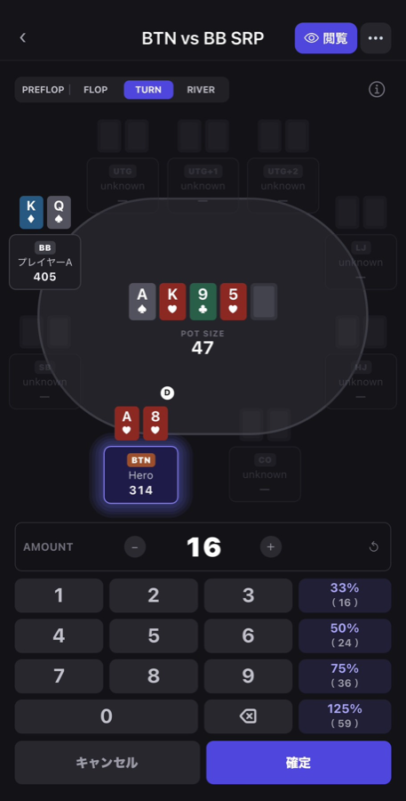

記録したハンドを「動画」で保存できるようになりました！ 保存した動画は X、LINE などで簡単に共有できます。もちろん無料で使えます。
投稿を見る ↗
v1.5.0 写真からボードを読めるように
ハンドの合間に、打ち終わる。
ハンドの合間に、打ち終わる。
プレイヤーごとに、履歴が追える。
ライブポーカーのハンドと対戦相手を、iPhone で記録するアプリです。
- iPhone（iOS 15.1 以降）
- 無料で始められる
- 会員登録なし
- 広告なし
- 記録は iPhone の中にハンドも相手のメモも、端末の中に保存します
- 会員登録なしで、すぐ開いて ＋ を押せば、記録が始まります
- 広告なし卓の上で広告が出ることはありません
FEATURES
卓で記録して、
家で振り返る。
カードを持っている間はスマホを触れません。だから、降りてから次のハンドが配られるまでに打ち終わる速さにしました。
01
記録する
1 手 1 タップ。必須の欄はありません。
- 打った席を押すと、あいだの席は自動でフォールド
- 額はプリセット（2bb・3bb・ポットの 33〜125%）から
- オンラインのハンドヒストリーも貼って取り込める
02
ボードを読む
写真やカメラから、場のカードを入れます。
- カメラで映すと、場のカードを読み取って自動で撮影
- 撮ってある写真からも読める
- 読み取りは iPhone の中だけで行います
03
振り返る
ストリートごとの履歴と、自動の収支。
- リプレイで 1 手ずつ再生PRO
- リプレイを動画で保存・共有（無料）
- 店ごとのレート・レーキで収支を bb まで計算
04
相手を覚える
席に人を座らせると、その人にハンドが貯まります。
- 名前を知らなくても「白帽子の人」で登録
- 色分けしたタグで、人となりを一言で
- その人の視点で、同卓したハンドを一覧に
BOARD SCAN
ボードは、
カメラで映すだけ。
ボードを選ぶ画面でカメラを向けると、場のカードの枠と名前が出ます。全部が読めたら、自動で撮って入れます。
- 自信のないカードは「?」で残し、黙って間違えません
- 向きが逆に読めたら、⇄ で並びを直せます
- 写真の読み取りは、iPhone の中だけで行います
ボードが写らないまま 30 秒たつと、カメラは自動で閉じます。
VIDEOS
機能紹介の動画
X に載せている紹介動画です。押すと再生します。
SCREENS



PLANS
無料で始めて、
足りなくなったら Pro。
Pro はどちらのプランも 7 日間の無料お試しつき。いつでも App Store から解約できます。
無料
¥0
ずっと無料で使えます
- ハンドの記録は月 20 件まで
- プレイヤーの記録は無制限
- 写真・カメラからボードを読む
- リプレイを動画・画像で保存
- リプレイ再生
- タグで絞り込む・逆引き
LiveCache Pro
¥600 ／ 月
年額なら ¥4,800 ／ 年（月あたり ¥400）
- ハンドの記録が無制限
- リプレイ再生
- タグで相手を絞り込む・タグから逆引き
- 相手のハンドを全て表示
- GTO Wizard 形式で書き出す
UPDATES
アップデート履歴
新しい版から順に載せています。開くと、その版で変わったことが見られます。
v1.5.0最新2026-09-28写真からボードを読む・動画の保存を無料に
- 写真からボードを読めるようになりました。ボードを選ぶ画面でカメラを向けるか写真を選ぶと、場のカードが入ります（読み取りは端末の中だけで行います）
- リプレイを動画にして保存・共有するのが、無料で使えるようになりました
- 動画を作るあいだの進み具合を出し、できた動画をその場で見てから保存・共有できるようにしました
- プリフロップが終わると、ボードを選ぶ画面が自動で開くようになりました
- 呼ばれなかったベットを戻してから、ポット・レーキ・収支を計算するようにしました
- そのほか、細かい不具合を直しました
v1.4.02026-09-26リプレイの動画・トーナメントのアンティ
- リプレイを動画にして保存・共有できるようになりました（このときは Pro。1.5.0 から無料）
- フォールドした席のカードが、卓の上で消えていく動きを付けました
- 履歴で手を選ぶと、その手を打ったあとの卓が見られるようになりました
- トーナメントのブラインドに、アンティを入れられるようになりました
- 残りのスタックを超える額や、最低レイズに届かない額は出せないようにしました
- ホームのカレンダーで、先の月も見られるようにしました
v1.2.02026-09席をタップして入力・無料プランの範囲
- 卓の席をタップするだけで、ハンドやプレイヤーを入力できるようになりました（長押しも今までどおり使えます）
- ハンドの記録は、無料の場合 1 か月に 20 件までになりました。LiveCache Pro なら件数の上限はありません
- まだ打ち終わっていない記録を開いたときに、そのまま続きを入力できるようにしました
- そのほか、細かい不具合を直しました
v1.1.02026-09LiveCache Pro を始めました
- 有料プラン LiveCache Pro を始めました（月額・年額。どちらも 7 日間の無料お試しつき）
- 日付の選び方を日本語の暦にするなど、画面のあちこちを整えました
v1.02026-09-02App Store で公開しました
- ハンドの記録・プレイヤーとタグ・ハンドの画像とテキストでの共有
REQUEST
ご要望・不具合は、
お気軽にどうぞ。
「こんな機能がほしい」「ここが使いにくい」など、ひと言でもうれしいです。お名前は要りません。
アプリの 設定 → 不具合の報告・要望 からも送れます。返信が要るときは、メールアドレスを書いてください。
今夜のハンドを、
今夜のうちに。
思い出せるうちに残す。それだけで、次の卓が変わります。